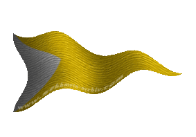
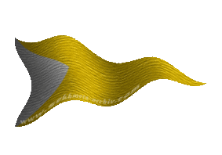

|

|
Das schwarze Brett
|
|
| Übersicht,
Anschläge und Stammtisch (RPG) |
|
Bücherwurm sucht...
|
| LiNeer Ke`nath (RIP) |
Ich bin auf der Suche nach einem oder mehreren Gelehrten, welche sich in den Bibliotheken der Scherbe auskennen.
Ich benötigte Hinweise auf gewisse Lektüren und den Ort, wo sie zu finden wären.
Vielleicht ist auch die Ein oder Andere Privatperson in Besitz eines interessantes Buches und würde mir gestatten eine Abschrift anzufertigen.
Personen, die geneigt wären meinem Wissenstand mit ihren Informationen zu erweitern, mögen mir einen Boten schicken.
~~~~~~LiNeer Ke`nath~~~~~~
LiNeer Ke`nath
Zur 8. Stunde am 88.Dunkelfrost im Jahre 422 |
21.12.05 15:15
 |
|
| Marduc (RIP) |
Welche Information benötigt Ihr denn?
Baron Marduc,
Vorsteher von Ganath Nova,
Anführer der glorreichen Nation "Der Pfad der letzten Sünde",
Superminister für alle Angelegenheiten,
Verlobter der reizenden Gabria von Corin
Zur 14. Stunde am 88.Dunkelfrost im Jahre 422 |
21.12.05 16:27
|
|
| LiNeer Ke`nath (RIP) |
Jegliche Information kann von Relevanz sein. So ich zu einem Gelehrten vertrauen gefasst habe, werde ich abwägen konkrete Wünsche zu äußern.
Bis dahin sei jedes Buch, dass nutzbare Informationen enthält für mich von Interesse.
LiNeer Ke`nath
Zur 16. Stunde am 88.Dunkelfrost im Jahre 422 |
21.12.05 17:06
|
|
| Celebrimbor (RIP) |
In welchen Bereichen wollt ihr den forschen? Damit ihr wenn möglich einen Spezialisten findet.
Freiherr Celebrimbor de Corazon,
Vorsteher von Asgards Ocarnje,
Verlobter der reizenden Greebo von Lansk
Zur 17. Stunde am 88.Dunkelfrost im Jahre 422 |
21.12.05 17:21
|
|
| LiNeer Ke`nath (RIP) |
Alchemie, Magie, Heilkunst, Götter, Völker, Kräuter, Gifte, berauschende Mittel, Sexualität, Traiditionen...sucht euch etwas aus.
Ich hege nicht den Wunsch mich zu spezialisieren sondern eher mein Wissen im Allgemeinen breiter zu fächern. Dementsprechend suche ich einen Gelehrten, der die Bibliotheken kennt - weiß wo welche Art Bücher zu finden sind, welcher seine Empfehlung haben.
Und jede Art anderer nutzbarar Information.
Ich hiel diesen Wunsch eigentlich für keinen besonders Schwierigen. Irgendein Buch besizt schließlich jeder in seinem Heim oder nicht?
LiNeer Ke`nath
Zur 18. Stunde am 88.Dunkelfrost im Jahre 422 |
21.12.05 17:30
|
|
| Abraxas par Omgaron (RIP) |
Ich erinnere mich daran das der Ramius ein sehr belesener Mann ist.
Abraxas par Omgaron,
Hohepriester im Dienste des einzig wahren Glaubens an Urvan
Zur 22. Stunde am 88.Dunkelfrost im Jahre 422 |
21.12.05 18:21
|
|
| LiNeer Ke`nath (RIP) |
Was ich vergaß: Metallurgie, Informationen über die Beschaffenheiten von Edelsteinen und anderen Bergsteinen und deren eventuelle Kräfte wären ebenfalls von Interesse.
Wie erwähnt gibt es kaum eine Thematik in der ich nicht beabsichtige mich zumindest in gewissem Grade kundig zu machen.
Ich danke für jeden Hinweis und jede Hilfe.
LiNeer Ke`nath
Zur 6. Stunde am 89.Dunkelfrost im Jahre 422 |
21.12.05 20:15
|
|
| Alcrotas Feuerfunken (RIP) |
So ihr während eurer Studien Wissen oder Methoden zur erfolgreichen Ahnenforschung entdeckt, Milady, wäre ich über eine kurze Nachricht sehr angetan.
Gewiss ist es ein richtiger Gedanke, Schriften um Rat zu fragen, jedoch mag es in der Masse schwierig sein, Banalitäten von relevanten Erkenntnissen zu unterscheiden.
Viel Erfolg!
Alcrotas Feuerfunken
Zur 8. Stunde am 89.Dunkelfrost im Jahre 422 |
21.12.05 20:45
|
|
| Nestor (RIP) |
Ich rate Euch, die Bibliotheken der Rathhäuser aufzusuchen. Es ist unbestritten, dass sie das Wissen mehren.
Aber es mag viele geben, die des Schreibens nicht mächtig sind. Daher rate ich Euch , geht in die Dörfer und Städte und fragt den einfachen Mann, die einfache Frau. Das was der Pöbel an Gerüchten verbreitet beinhaltet oft einen wahren Kern. Diesen gilt es zu ergründen und zu bewerten.
Und wenn Euch diese Wege nicht helfen so bleibt das Gebet zu Pheron, welcher Euch sicher nicht mit Euren Fragen im Dunkeln lässt.
Nestor,
Kardinal im Dienste des einzig wahren Glaubens an Pheron
Zur 13. Stunde am 89.Dunkelfrost im Jahre 422 |
21.12.05 21:57
|
|
| Ahab der Graue (RIP) |
Nun, wenn Ihr Information über die Gestalt und Beschaffenheit der Scherbenscheibe und die Position der unveränderlichen Gestirne im Himmelsäther benötigt, so wendet Euch an den Dekan der Universität Brilandia, also an mich.
Ahab der Graue
Zur 14. Stunde am 89.Dunkelfrost im Jahre 422 |
21.12.05 22:09
|
|
| Malachias (RIP) |
Bibliothek (4419/194, Lagerinsel)
Zeuss
Zur 1. Stunde am 90.Dunkelfrost im Jahre 422 |
22.12.05 0:43
|
|
| LiNeer Ke`nath (RIP) |
Werter Alcrotas Feuerfunken,
ich fürchte die Ahnenforschung ist aktuell eines der wenigen Themen mit denen ich mich kaum näher befassen werde - sollte mir jedoch zufällig ein Buch oder ein Gelehrte über diese Thematik Auskunft geben können, werde ich euch gern meine Erkenntisse berichten.
--------------
Verehrter Nestor, Kardinal im Dienste des einzig wahren Glaubens an Pheron,
Die Bibliotheken in den Städten besitzen fast allesamt nur die Standardwerke. Nur selten findet sich dort eine wahrlich interessante Lektüre. Ich habe nicht die Zeit jede Bibliothek der Welt nach diesen Einzelstücken zu durchsuchen, eben daher diese Anfrage an die Öffentlichkeit: Ich suche nach Personen, die Wissen wo interessante Bücher zu finden sind oder welche besitzen.
Die Landsleute befrage ich in jeder Stadt, in jedem Dorf, in das ich gelange - ihr seid wahrlich weise, dass ihr den Wert der Geschichten erkannt habt. Ich lausche ihnen stets gern.
Was das Beten zum Gotte Pheron betrifft bin ich diesbezüglich unschlüssig - auch auf diesem Gebiet nenne ich wohl einige Wissenslücken und Eigen. Dementsprechend wird noch einige Zeit ins Land gehen, bis ich Überlegungen treffe, welchem Gott ich zu huldigen gedenke.
Ich danke euch jedoch für eure Ratschläge.
-------------------
Werter Ahab der Graue,
ich werde euch einen Boten schicken.
----------------------
Werter Zeuss,
vielleicht mangelt es mir stärker an Intelligenz als ich zu glauben vermag, doch entzieht sich mir der Sinn eures Zettels: Es gibt eine Bibliothek auf der soganannten Lagerinsel, auch die genauen Koordinaten habt ihr genannt, doch könntet ihr mir verraten welche Bewandnis diese Information konkret mein Anliegen betreffend besitzt?
Es gibt viele Bibliotheken. Unterschiedlicher Art und mit unterschiedlichen Spezialisierungen. Ich weiß aktuell weder welchen Namen die besagte Bibliothek trägt, noch welche Bücher sie hauptsächlich verbirgt. Selbst wenn ich Beide Informationen besäße hälfte mir dies doch nur in sehr geringem Umfang weiter, da ich, wie erwähnt, auf der Suche nach einem Gelehrten bin, der sich mit den hiesigen Bibliotheken oder zumindest einer davon, ausreichend gut auskennt um mir sagen zu können, ob und wenn ja welche interessanten Lektüren sich dort versteckt hielten.
Verzeiht die etwas umständliche Art euch mitzuteilen, dass ihr Nichts zu schreiben braucht, wenn ihr nicht helfen könnt.
~~~~~~LiNeer Ke`nath~~~~~~
LiNeer Ke`nath
Zur 3. Stunde am 90.Dunkelfrost im Jahre 422 |
22.12.05 1:05
|
|
Fjokel ok Schnjokel
   |
Liebe LiNeer Ke`nath,
die Gelehrten meiner Universität publizieren knapp 1100 Bücher täglich, wenn ihr wollt überlasse ich euch einen Stapel und ihr könnt etwas darin herumstöbern, es sollte sich zu jedem Themengebiet etwas finden.
Grüsse,
Fjokel
Fjokel ok Schnjokel,
Kardinal im Dienste des einzig wahren Glaubens an Pheron,
Ehemann der reizenden Lilokel ok Schnjokel
Zur 10. Stunde am 1.Saatmond im Jahre 423 |
22.12.05 8:29
|
|
| Malachias (RIP) |
Ich bin an dieser Bibliothek vorbeigekommen und dachte ich schreibe die koordinaten auf, jedoch habe ich leider nicht reingeschaut, konnte mihc nur an euer Anschlag erinnern, was da drinne ist weiss ihc nicht.
Zeuss
Zur 11. Stunde am 1.Saatmond im Jahre 423 |
22.12.05 8:39
|
|
| Marie Bor Somar (RIP) |
Werte LiNeer Ke`nath,
wie Abraxas par Omgaron schon meinte, Ramius ist ein belesener Mann, habe ich gehört.
Doch könnt Ihr sicher auch seiner Lehin Judith schreiben. Ich hoffe, dass sie noch das Wissen um ihre Bücher hat.
Liebe Grüße
Lady Marie Summerrain,
Kardinälin im Dienste des einzig wahren Glaubens an Larja
Zur 12. Stunde am 1.Saatmond im Jahre 423 |
22.12.05 8:58
|
|
| LiNeer Ke`nath (RIP) |
Fjokel ok Schnjokel,
1200 Bücher am Tag? Um Abschriften welcher Werke handelt es sich? Schließlich werden kaum 1200 neueBücher an einem Tag geschrieben.
--------------------
Bezüglich Ramius: Der Baron kontaktierte mich bereits und ich danke jenen, die ihn auf meine Person aufmerksam machten.
-------------------
Bisher verwundert mich nur folgendes, wobei es eigentlich auch verständlich ist: Gibt es keinen Zwerg, der sein Wissen über Metalle, Steine und Kristalle mit mir zu teilen gedenkt? Schade - aber die Zwerge waren stets für ihre Geheimniskrämerei bekannt.
Dennoch werde ich mich noch etwas gedulden, vielleicht wird mir das Glück auch in dieser Hinsicht noch Hold sein.
LiNeer Ke`nath
Zur 23. Stunde am 1.Saatmond im Jahre 423 |
22.12.05 11:28
|
|
| Ahab der Graue (RIP) |
Geehrte Scherbenbürger,
Ich möchte hier eine Abschrift eines Schreibens an die werte LiNeer Ke´nath anfügen, auf daß das darin dargelegte Wissen eine weitere Verbreitung erfahre.
Werte LiNeer Ke´nath,
Ihr hattet um einige Grundlagen gebeten. Am besten scheint es mir, ich würde einige unumstößliche Tatsachen beschreiben, die die Form und Ausdehnung der Scherbe betreffen. Es ist eine Zusammenfsssung eines Buches das ich dereinst zu schreiben gedenke.
Einige glauben ,die Scherbe wäre gekrümmt oder hätte gar eine Kugelform - ein ketzerischer Gedanke! In Wahrheit ist die Scherbe eine flache Scheibe. Bei jeder Art von Krümmung nämlich würde das Wasser der Scherbenozeane sich flugs an einem Punkte sammeln oder im anderen Fall abfließen.
Natürlich fließt das Wasser auch von den Rändern der Scheibe ab, doch wird es ständig vom Regen und Schnee ersetzt. Aus diesem Abfließen lässt sich auch eine ungefähre Information über die Größe der Scherbe gewinnen. Nimmt man an daß die Ozeane im Randgebiet der Scherbenscheibe ähnlich tief sind wie hier, nimmt man ferner der Einfachheit halber einen runden Rand an, so kann man berechnen, wie wieviel Wasser ständig über den Rand der Scherbe abfließt - eine Größe die mit dem Umfange also auch linear mit dem Radius der Scheibe zusammenhängt. Setzt man dies mit der Niederschlagsmenge der gesamten Scherbe in Bezug, die ja von der Fläche, also quadratisch vom Scherbenradius abhängt, kann man diesen Radius berechnen. Bei der genauen Berechnung, die ich Euch ersparen will (Ihr werdet diese dereinst ausführlich in meinem Buche nachlesen können), kommt man auf einen Scherbenradius von etwa 5000 bis 7000 Meilen. Das erklärt, warum kein Seefahrer bisher den Rand erreichen konnte, nicht einmal Kapitän Brendan damals auf seiner legendären Fahrt.
Wörauf ruht nun die Scherbenscheibe? Hier lässt einen die Mathematik noch im Stiche. Manche vermuten, daß die Scherbenscheibe auf einer Art Säule oder einen Sockel ruht. Ich meine doch eher, daß die Scheiber in einem Flammenozean schwimmt. Ein untrügliches Zeichen davon sind die Vulkane, in denen das göttliche Feuer dieses Flammenozeans durchscheint.
Ein weiteres Abbild dieses Flammenozeans sind die Sterne und auch die Sonne selber. Bei der Drehung der kristallenen Himmelssphäre, des Himmelsäthers, werden glühende Stücke und Tröpfchen des Flammenozeans mitgerissen, die uns dann als flammende Punkte am Firmamente erscheinen, bevor sie im Westen zusammen mit der Kristallsphäre an der sie haften, wieder in den Flammenozean eintauchen. Dieses wäre natürlich unmöglich, wenn die Scherbe auf einem Sockel ruhen würde, denn an diesem würde die Kristallsphäre bei ihrer Drehung unweigerlich zerschellen.
Wie weit sind denn nun die Sterne und die Sonne entfernt? Natürlich müssen sie weiter entfernt sein als der Radius der Scherbenscheibe beträgt, also mehr als 5000 bis 7000 Meilen. Eine obere Grenze der Entfernung ergibt sich aus der Tatsache, daß die Gestirne bei der Umdrehung der Himmelskugel einem Luftzug ausgesetzt sein müssen, der umso heftiger ist, je größer der Radius dieser Himmelskugel ist. Der Luftzug ist sehr stark, denn manchmal lösen sich durch den Zug sogar Funken, die dann als glühende Sternschnuppen zur Scherbe niederstürzen. Auch facht er die glühenden Sternenfunken zu umso hellerer Glut an. Er darf jedoch nicht zu stark sein, denn sonst würden die Sterne verlöschen. Eine genaue Rechnung die ich Euch wieder ersparen will, ergibt einen maximalen Radius der Kristallsphäre von etwa 10000 Meilen. Also sind die Himmelskörper zwischen etwa 7000 und 10000 Meilen entfernt - eine ungeheure Entfernung!
So seht Ihr wie sich alles unweigerlich zu einem schlüssigen und wahren Bilde der Scherbenwelt fügt, und jeder der noch etwas anderes behaupten will, ist ein Lügner oder Dummkopf. Gerne bin ich jedoch bereit, weitere Beweise und Überlegungen darzulegen für diejenigen die immer noch zweifeln.
Meine besten Grüße
Ahab der Graue
Ahab der Graue
Zur 6. Stunde am 2.Saatmond im Jahre 423 |
22.12.05 13:09
|
|
Übersicht,
Anschläge und Stammtisch (RPG)
|
|
|
|